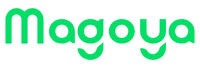

Elegí qué vas a armar.
Cada pieza tiene su página. Las de aplicaciones, merch y papelería están más abajo en esta misma página.
La marca en acción
Cómo se ve Magoya en cada canal: web, redes sociales, presentaciones y piezas de contenido. La portada del hero es la pieza canónica — foto aérea + overlay verde profundo + wordmark crema + display crema + CTA como único acento lima: si una pieza nueva no conversa con ella, no es Magoya.
Web — hero canónico
 Contact us
Contact us
Software and AI for agribusiness
La receta: foto aérea real · scrim verde profundo 55–86% · wordmark crema arriba-izquierda · CTA lima arriba-derecha · display ExtraBold crema abajo-izquierda. El único golpe de lima queda en el CTA.
Web — favicon & app icon aplicados
El mismo avatar "m" ya está aplicado como favicon real en todas las páginas de este sistema — no es una maqueta.


Implementación: <link rel="icon" type="image/svg+xml" href="favicon.svg"> + PNG de respaldo en 32/16px + apple-touch-icon 180px. El SVG fuente es assets/avatars/avatar-m.svg — mismo archivo, sin editar.
Redes sociales — feed (1:1)

Tres recetas de feed: foto (statement sobre aérea) · crema (aviso con avatar de comunidad) · dark (dato lima + personaje recortado). Rotarlas mantiene la grilla variada y reconocible.
Redes sociales — story (9:16), banner y avatar


Avatar de perfil: la cara para redes de comunidad (IG, X), la m para canales corporativos (LinkedIn). Banner de LinkedIn: panel negro sólido a la izquierda con wordmark crema y tagline siempre nítidos + foto limpia a la derecha — cuerpo en B&N con blur sutil, hombros y cuello reconocibles como persona sin mostrar la cara, y el wordmark de la remera completo y sin nada encima — + filete verde digital al borde. Tres personas reales, misma receta.
Presentaciones
El sistema completo de slides vive en módulos de presentación: 41 módulos en 13 familias con la escala del diseñador (126/84/56/42pt), lienzos blanco/sage, un golpe de lima por slide y máximo dos recursos gráficos. Cada módulo se exporta a .pptx. Las piezas comerciales (one-pager, flyers) están en plantillas comerciales.
Contenido — módulo de métricas
Software for an
ag input company

Especificaciones de export
- Slides: 16:9 (1920×1080) · margen interior = 7% del ancho en todos los lados · tipografía 126/84/56/42pt.
- Favicon / app icon: avatar “m” · 16/32/180/512px · el círculo llega al borde del lienzo, sin padding extra.
- Social: feed 1:1 (1080×1080) · carrusel retrato 4:5 (1080×1350) · stories 9:16 (1080×1920, zona segura 96px arriba/abajo) · wordmark arriba-izquierda, CTA lima arriba-derecha. Los 13 formatos de red viven en Magoya Studio.
- Print: A4 con sangrado 3mm · validar CMYK con prueba de color (lima y verde digital pierden saturación en papel).
La marca puesta
Regla madre del merch (del modelo de producción del buzo): verde profundo + crema, discreto y premium. Wordmark chico en pecho izquierdo, monograma en espalda, patrón de avatares solo en interiores/forros. Nada de estampas gigantes ni lima en textil. El merch se muestra siempre con foto/render real — los esquemas de abajo son especificación de producción, no presentación.
Catálogo de merch — fotos reales
Regla: el merch se muestra SIEMPRE con foto o render real del producto — nunca con ilustración ni esquema vectorial. Cada producto abajo tiene su especificación de aplicación; los que aún no tienen foto muestran el slot con el nombre de archivo esperado.
Para completar el catálogo: dejar las fotos en assets/photos/merch/ con el nombre indicado en cada slot (JPG, lado largo ≥1600px). Se muestran solas al recargar.
Especificación de producción — Buzo, Propuesta 1
El buzo ya tiene render real (arriba, primer producto del catálogo) y define el estándar de calidad para el resto del merch textil — no es la referencia a mostrar primero, es la guía de medidas y colocación:

- Frente: wordmark crema bordado, pecho izquierdo.
- Espalda: monograma “m” crema bajo el cuello.
- Forro de capucha: trama de avatares crema/verde (tile 80×80mm, espaciado 20mm).
- Parche canguro: “Magoya · since 2017” 65×35mm.
- Colorways aprobados: verde profundo · crema · negro · gris.
El vector de bordado del pecho (60mm, crema) se baja de la librería de assets; el resto de los vectores de producción (monograma 30mm, trama capucha, parche) siguen en la carpeta “Diseño buzos”. Remera, gorra, vaso y cuaderno: pendiente foto real — hasta entonces, solo especificación.
La referencia de calidad es el render del buzo (guía de producción con colores y espaciados). Toda pieza textil se valida contra ella: bordado antes que estampa, tono sobre tono antes que contraste, crema #ECE3DB y verde #133825 como dupla fija, y sin lima en textil.
El logo en documentos
Membrete, firma de email y reglas para documentos del día a día — donde la marca más se degrada si no hay sistema.
 Buenos Aires, 3 de agosto 2026
Buenos Aires, 3 de agosto 2026Membrete A4. Wordmark verde arriba-izquierda (20% del ancho), texto en Manrope (fallback Arial), pie con filete verde digital + avatar “m”. Sin marcas de agua ni fondos.
— Saludos,

Firma de email. Va siempre el wordmark — nunca los avatares ni la cara. Estático o animado (arriba se ve en vivo: empieza con el logo completo, anima la entrada de las letras y termina en el logo completo). Filete verde + nombre 700 + rol y datos en gris. Debajo del contacto, dos elementos opcionales: el ícono de LinkedIn (16px) y el link a IA en Campo — la única marca anexa que amerita su propia línea en la firma. El LinkedIn es a elección de cada persona: la página de Magoya como base, o el perfil personal si lo prefiere — cada uno carga el link que le corresponda. Sin banners, sin frases legales eternas, sin más logos de redes que ese.
Descargas de papelería


Cómo se sube la firma a Gmail
- Subí el GIF a un lugar público (Drive con link público, el sitio, cualquier hosting): Gmail no permite insertar un archivo local en la firma, necesita una URL.
- Gmail → Configuración → Ver todos los ajustes → General → Firma → Crear nueva.
- Escribí el texto primero (Nombre, Rol · Magoya, magoya.com, teléfono) en Arial — Gmail no soporta Manrope.
- Cursor donde va el logo → Insertar imagen → Dirección web (URL) → pegá la URL → tamaño Pequeño (~120px).
- Guardá los cambios al pie de la página. El primer frame del GIF muestra el logo completo. Si el cliente no reproduce animaciones, usá la firma estática PNG como respaldo explícito.
- Si querés sumar el ícono de LinkedIn y el link a IA en Campo (como en el ejemplo de arriba): insertalos igual, con Insertar imagen → Dirección web (URL) el ícono, enlazado a la página de Magoya o a tu perfil personal (los dos son válidos, elegís vos), y como texto con link el link de IA en Campo.
Cómo está construido: el wordmark oficial en verde digital; el primer frame muestra el logo completo; después las letras entran de a una con un leve rise y se detiene sobre el logo completo — 13 frames, sin loop (una sola pasada). Para una firma sin animación, usar el PNG de respaldo, fondo blanco (los clientes de correo no manejan bien la transparencia). Se genera desde el SVG del wordmark, nunca se redibuja.
Reglas en documentos
- Docs y slides internos: wordmark en esquina superior izquierda, tamaño discreto (≤ 1/5 del ancho).
- Tipografía de documentos: Manrope; si no está instalada (Google Docs de terceros, mails), Arial — nunca otra.
- PDF externos siempre desde las plantillas de piezas comerciales.
- Logo como marca de agua gigante, en gris lavado, o repetido por página.
- Avatares como viñetas de lista o adornos — son identidad, no decoración.